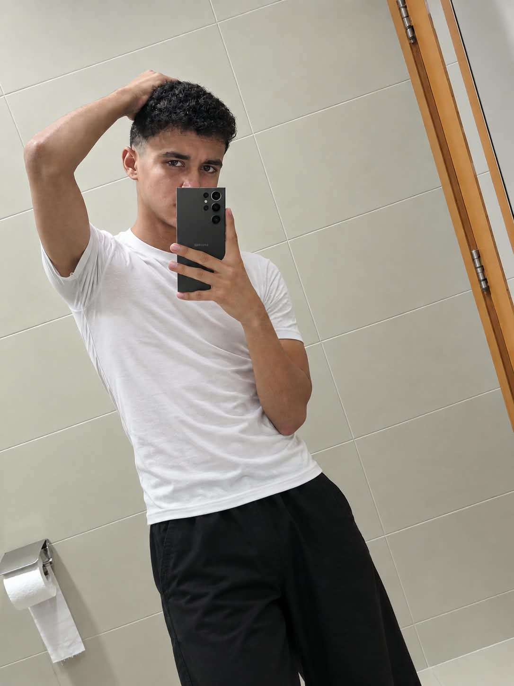

"Hi! I'm an athletic person with a deep passion for both football and programming. Whether I'm on the pitch playing a competitive match or behind my screen writing clean code, I always bring energy, focus, and dedication to everything I do." "I live by two main passions: football and coding. Playing football teaches me teamwork, discipline, and how to stay active, while programming challenges my mind and allows me to build creative digital solutions from scratch." "Welcome to my space! I'm a sports enthusiast who loves the thrill of football, and a passionate coder who enjoys turning ideas into reality through programming. For me, scoring a great goal and solving a complex coding problem bring the exact same rush of excitement." "By day, I love diving into the world of programming, learning new technologies, and building websites. By evening, you'll find me on the football field, staying fit and enjoying the beautiful game. I believe a strong body and a sharp mind are the ultimate combination." "I'm an active, sporty individual with a big love for football and technology. Football keeps me energized and teaches me how to work in a team, while coding fuels my curiosity and problem-solving skills. Always striving to improve both my game on the field and my skills in tech!" "Passionate about football, driven by code. As an athlete and a programmer, I thrive on challenges—whether it's pushing my limits during a tough football match or debugging lines of code late at night. I'm always eager to learn, grow, and create."
